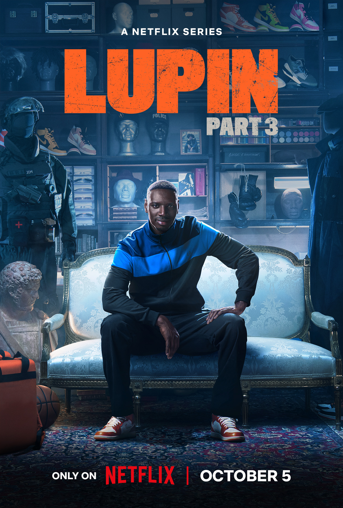
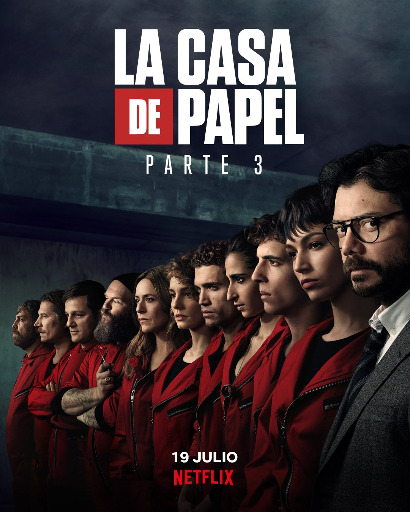
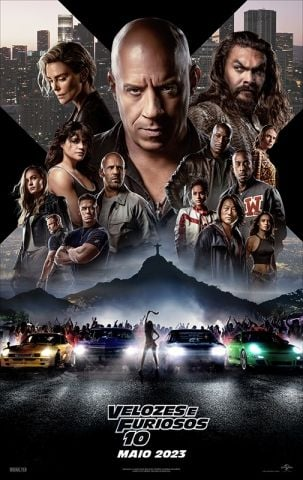
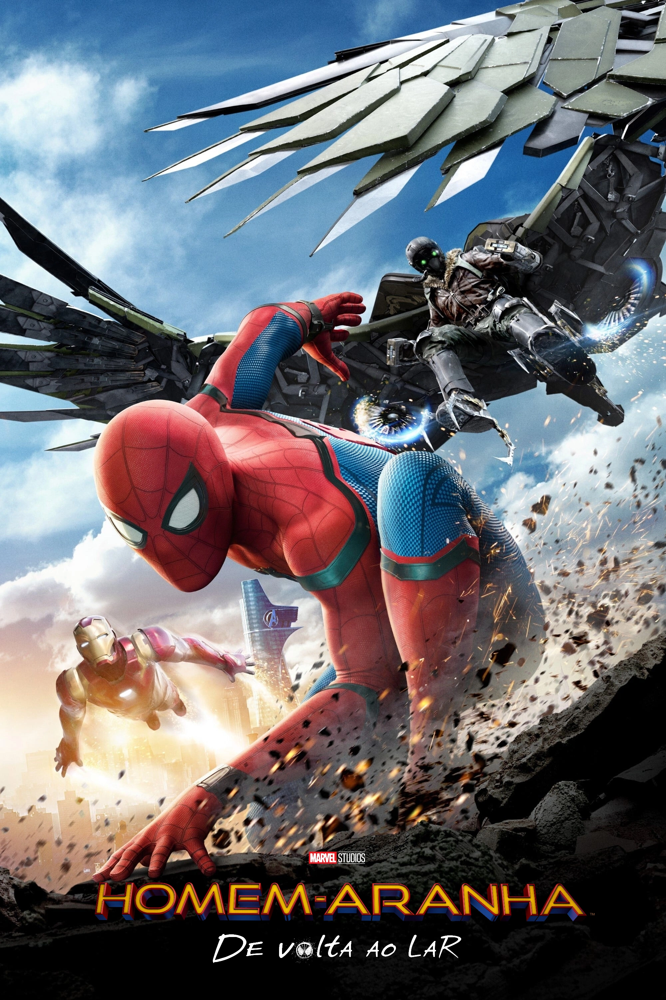

Top 10 Filmes
-------------------------------------------------------------------------------------------------------------------------------
Lupin

Título: Lupin
Criador: George Kay
Duração:
Temporadas: 3 (até o momento)
Epísodios: 17 epídios no total
Duração média po r episódio: 40 a 50 min
Classificação indicativa:
14 anos
Curiosidade:
O ator Omar Sy, que interpreta Assane Diop, foi o primeiro ator negro a ganhar o prêmio César (o “Oscar francês”) de Melhor Ator, em 2012, pelo filme Intocáveis
-------------------------------------------------------------------------------------------------------------------------------
Stranger Things
 Título: Stranger Things
Criadores: Irmãos Duffer (Matt e Ross Duffer)
Título: Stranger Things
Criadores: Irmãos Duffer (Matt e Ross Duffer)
Duração:
Temporadas: 4 disponíveis (a 5ª e última estreia no final de 2025)
Episódios: 34 até agora
Duração média por episódio: entre 45 minutos e 1h30
Classificação indicativa:
14 anos
Curiosidade:
A série quase se chamou "Montauk", e se passaria originalmente em Nova York, inspirada em uma teoria da conspiração chamada Projeto Montauk
-------------------------------------------------------------------------------------------------------------------------------
Deadpool
.png) Título: Deadpool
Criadores: Criado nos quadrinhos por Rob Liefeld (arte) e Fabian Nicieza (roteiro)
Título: Deadpool
Criadores: Criado nos quadrinhos por Rob Liefeld (arte) e Fabian Nicieza (roteiro)
Duração:
1h48
Classificação indicativa:
18 anos
Curiosidade:
Ryan Reynolds lutou por mais de 10 anos para conseguir fazer o filme acontecer. A Fox não queria apostar num filme de super-herói violento e com humor politicamente incorreto.
-------------------------------------------------------------------------------------------------------------------------------
La Casa de Papel

Título: La Casa de Papel
Criadores: Álex Pina
Duração:
Temporadas: 5 (divididas em 2 grandes assaltos)
Episódios: 41 no total
Duração média: 40 a 55 minutos por episódio
Classificação indicativa:
16 anos
Curiosidade:
A série foi originalmente um fracasso na TV espanhola, onde foi exibida em 2017 no canal Antena 3 e teve baixa audiência.
-------------------------------------------------------------------------------------------------------------------------------
Bad Boys: Até o Fim (2024)
 Título: Bad Boys: Até o Fim (2024)
Diretor: Michael Bay
Título: Bad Boys: Até o Fim (2024)
Diretor: Michael Bay
Duração:
1h55
Classificação indicativa:
16 anos
Curiosidade:
O primeiro filme de Bad Boys foi a estreia de Michael Bay como diretor de cinema. O estúdio tinha pouco orçamento e quase cancelou a produção várias vezes.
-------------------------------------------------------------------------------------------------------------------------------
Jogador Nº 1
 Título: Jogador Nº 1
Diretor: Steven Spielberg
Título: Jogador Nº 1
Diretor: Steven Spielberg
Duração:
2h20
Classificação indicativa:
12 anos
Curiosidade:
O filme contém mais de 100 referências à cultura pop
-------------------------------------------------------------------------------------------------------------------------------
Fuga das Galinhas
 Título: Fuga das Galinhas
Diretor: Nick Park e Peter Lord
Título: Fuga das Galinhas
Diretor: Nick Park e Peter Lord
Duração:
1h24
Classificação indicativa:
Livre
Curiosidade:
Foram usadas galinhas de massinha e cada segundo do filme exigia 24 fotos diferentes, o que fez a produção durar vários anos!
-------------------------------------------------------------------------------------------------------------------------------
Velozes & Furiosos 10

Título: Velozes & Furiosos 10 (Fast X)
Diretor: Louis Leterrier
Duração:
2h21
Classificação indicativa:
14 anos
Curiosidade:
O filme é uma continuação direta de Velozes 5, e traz várias cenas que fazem conexão com o assalto ao cofre no Rio de Janeiro.
-------------------------------------------------------------------------------------------------------------------------------
Homem-Aranha: De Volta ao Lar

Título: Homem-Aranha: De Volta ao Lar
Diretor: Jon Watts
Duração:
2h13
Classificação indicativa:
12 anos
Curiosidade:
Esse foi o primeiro filme solo do Homem-Aranha dentro do Universo Cinematográfico Marvel (MCU), graças a um acordo entre a Marvel Studios e a Sony.
-------------------------------------------------------------------------------------------------------------------------------